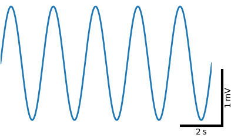
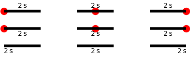
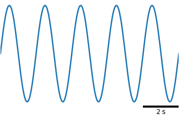
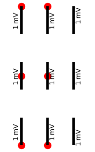
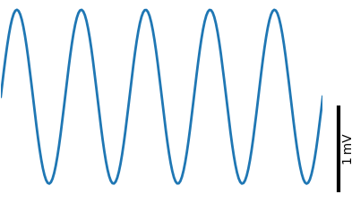
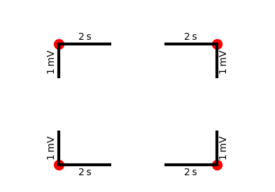

Module plottools.scalebars
Labeled scale bars.

Axes member functions
xscalebar(): horizontal scale bar with label.yscalebar(): vertical scale bar with label.scalebars(): horizontal and vertical scale bars with labels.
Settings
scalebars_params(): set rc settings for scalebars.
matplotlib.rcParams defined by the scalebar module:
scalebar.format.large: '%.0f'
scalebar.format.small: '%.1f'
scalebar.linewidth: 2
scalebar.color: 'k'
scalebar.capsize: 0
scalebar.caplinewidth: 0.5
scalebar.font: dict()
Install/uninstall scalebars functions
You usually do not need to call these functions. Upon loading the scalebars
module, install_scalebars() is called automatically.
install_scalebars(): install functions of the scalebars module in matplotlib.uninstall_scalebars(): uninstall all code of the scalebars module from matplotlib.
Alternatives
Functions
def xscalebar(ax, x, y, width, wunit=None, wformat=None, ha='left', va='bottom', hat='center', lw=None, color=None, capsize=None, clw=None, return_coords=False, **kwargs)-
Horizontal scale bar with label.
The first two arguments set the anchor point on which the scalebar is positioned. The scalebar position is given in relative coordinates of the axes (ranging from 0 to 1).
The third argument sets the length of the scale bar in data coordinates of the x-axis, followed by a string setting the unit of the scale.
The following code and figure illustrate the positioning of the scalebar and its annotation.
ha(horizontal alignment) determines whether the anchor is on the 'left', 'center', or 'right' of the scalebar. The vertical alignment (va) determines whether the annotation is on top ('top') or below ('bottom') the scalebar. In the figure the position of the scalebar, the anchor point, is shown as a red circle.ax.xscalebar(0.0, 0.8, 2, 's', ha='left', va='top') ax.xscalebar(0.5, 0.8, 2, 's', ha='center', va='top') ax.xscalebar(1.0, 0.8, 2, 's', ha='right', va='top') ax.xscalebar(0.0, 0.3, 2, 's', ha='left', va='bottom') ax.xscalebar(0.5, 0.3, 2, 's', ha='center', va='bottom') ax.xscalebar(1.0, 0.3, 2, 's', ha='right', va='bottom')
Parameters
ax:matplotlib axes- Axes where to draw the scale bar.
x:float- x-coordinate where to draw the scale bar in relative units of the axes.
y:float- y-coordinate where to draw the scale bar in relative units of the axes.
width:float- Length of the scale bar in units of the data's x-values.
wunit:stringorNone- Optional unit of the data's x-values.
wformat:stringorNone- Optional format string for formatting the label of the scale bar
or simply a string used for labeling the scale bar.
If None take value from rcParams
scalebar.format.largefor width larger than one, orscalebar.format.smallfor width smaller than one. ha:'left', 'right',or'center'- Scale bar aligned left, right, or centered to (x, y)
va:'top'or'bottom'- Label of the scale bar either above or below the scale bar.
hat:'left', 'right',or'center'- Horizontal alignment of text: text aligned on left, right or center of scale bar.
lw:int, float, None- Line width of the scale bar. If None take value from rcSetting
scalebar.linewidth. color:matplotlib color- Color of the scalebar.
capsize:floatorNone- If larger then zero draw cap lines at the ends of the bar.
The length of the lines is given in points (same unit as linewidth).
If None take value from rcParam
scalebar.capsize. clw:int, float, None- Line width of the cap lines.
If None take value from rcParam
scalebar.caplinewidth. return_coords:bool- For internal usage only. If
Truereturnx0,x1, andycoordinates of scale bar in addition to artists. kwargs:key-word arguments- Passed on to
ax.text()used to print the scale bar label. Defaults toscalebar.fontrcParams settings.
Returns
artists:listofmatplotlib artists- The Lin2D and Text objects making up the scalebar.
Use it to hide the scale bar like this
py sb = ax.xscalebar(1.0, 0.0, 1, 'ms', ha='right') [a.set_visible(False) for a in sb]
Examples
import matplotlib.pyplot as plt import plottools.spines import plottools.scalebars fig, ax = plt.subplots() ax.show_spines('') ax.xscalebar(1.0, 0.0, 2, 's', ha='right', va='bottom')
def yscalebar(ax, x, y, height, hunit=None, hformat=None, ha='left', va='bottom', vat='center', lw=None, color=None, capsize=None, clw=None, return_coords=False, **kwargs)-
Vertical scale bar with label.
The first two arguments set the anchor point on which the scalebar is positioned. The scalebar position is given in relative coordinates of the axes (ranging from 0 to 1).
The third argument sets the length of the scale bar in data coordinates of the y-axis, followed by a string setting the unit of the scale.
The following code and figure illustrate the positioning of the scalebar and its annotation.
va(vertical alignment) determines whether the anchor is on the 'top', 'center', or 'bottom' of the scalebar. The horizontal alignment (ha) determines whether the annotation is to the 'left' or to the 'right' of the scale bar. In the figure the position of the scalebar, the anchor point, is shown as a red circle.ax.yscalebar(0.3, 1.0, 1, 'mV', ha='left', va='top') ax.yscalebar(0.3, 0.5, 1, 'mV', ha='left', va='center') ax.yscalebar(0.3, 0.0, 1, 'mV', ha='left', va='bottom') ax.yscalebar(0.7, 1.0, 1, 'mV', ha='right', va='top') ax.yscalebar(0.7, 0.5, 1, 'mV', ha='right', va='center') ax.yscalebar(0.7, 0.0, 1, 'mV', ha='right', va='bottom')
Parameters
ax:matplotlib axes- Axes where to draw the scale bar.
x:float- x-coordinate where to draw the scale bar in relative units of the axes.
y:float- y-coordinate where to draw the scale bar in relative units of the axes.
height:float- Length of the scale bar in units of the data's y-values.
hunit:string- Unit of the data's y-values.
hformat:stringorNone- Optional format string for formatting the label of the scale bar
or simply a string used for labeling the scale bar.
If None take value from rcParams
scalebar.format.largefor hight larger than one, orscalebar.format.smallfor hight smaller than one. ha:'left'or'right'- Label of the scale bar either to the left or to the right of the scale bar.
va:'top', 'bottom',or'center'- Scale bar aligned below, above, or centered on (x, y).
vat:'top', 'bottom',or'center'- Vertical alignment of text: text aligned on top, bottom or center of scale bar.
lw:int, float, None- Line width of the scale bar. If None take value from rcParams
scalebar.linewidth. color:matplotlib color- Color of the scalebar.
capsize:floatorNone- If larger then zero draw cap lines at the ends of the bar.
The length of the lines is given in points (same unit as linewidth).
If None take value from rcParams
scalebar.capsize. clw:int, float- Line width of the cap lines.
If None take value from rcParams
scalebar.caplinewidth. return_coords:bool- For internal usage only. If
Truereturnx,y0, andy1coordinates of scale bar in addition to artists. kwargs:key-word arguments- Passed on to
ax.text()used to print the scale bar label. Defaults toscalebar.fontrcParams settings.
Returns
artists:listofmatplotlib artists- The Lin2D and Text objects making up the scalebar.
Use it to hide the scale bar like this
py sb = ax.yscalebar(1.0, 0.0, 1, 'mV', ha='right') [a.set_visible(False) for a in sb]
Examples
import matplotlib.pyplot as plt import plottools.spines import plottools.scalebars fig, ax = plt.subplots() ax.show_spines('') ax.yscalebar(1.05, 0.0, 1, 'mV', ha='right', va='bottom')
def scalebars(ax, x, y, width, height, wunit=None, hunit=None, wformat=None, hformat=None, ha='left', va='bottom', hat='center', vat='center', lw=None, color=None, **kwargs)-
Horizontal and vertical scale bars with labels.
The first two arguments set the anchor point on which the scalebar is positioned. The scalebar position is given in relative coordinates of the axes (ranging from 0 to 1).
The third and forth arguments set the length of the scale bars in data coordinates of the x- and y-axis, followed by two strings setting the unit of the scales.
Horizontal alignment (
ha) determines whether the anchor point and the vertical scalebar is on the 'left' or on the 'right' of the horizontal scalebar. Vertical alignment (va) determines whether the anchor point and the horizontal scalebar are at the 'top' or 'bottom' of the vertical scalebar. In the figure the position of the scalebar, the anchor point, is shown as a red circle.ax.scalebars(0.2, 0.8, 2, 1, 's', 'mV', ha='left', va='top') ax.scalebars(0.8, 0.8, 2, 1, 's', 'mV', ha='right', va='top') ax.scalebars(0.2, 0.1, 2, 1, 's', 'mV', ha='left', va='bottom') ax.scalebars(0.8, 0.1, 2, 1, 's', 'mV', ha='right', va='bottom')
Parameters
ax:matplotlib axes- Axes where to draw the scale bar.
x:float- x-coordinate where to draw the scale bar in relative units of the axes.
y:float- y-coordinate where to draw the scale bar in relative units of the axes.
width:float- Length of horizontal scale bar in units of the data.
height:float- Length of vertical scale bar in units of the data.
wunit:string- Unit of x-values.
hunit:string- Unit of y-values.
wformat:stringorNone- Optional format string for formatting the x-label of the scale bar
or simply a string used for labeling the x scale bar.
If None take value from rcParams
scalebar.format.largefor width larger than one, orscalebar.format.smallfor width smaller than one. hformat:stringorNone- Optional format string for formatting the y-label of the scale bar
or simply a string used for labeling the y scale bar.
If None take value from rcParams
scalebar.format.largefor height larger than one, orscalebar.format.smallfor height smaller than one. ha:'left'or'right'- Scale bars aligned left or right to (x, y). Vertical scale bar left or right.
va:'top'or'bottom'- Scale bars aligned above or below (x, y). Horizontal scale bar on top or at the bottom.
hat:'left', 'right',or'center'- Horizontal alignment of text: text aligned on left, right or center of scale bar.
vat:'top', 'bottom',or'center'- Vertical alignment of text: text aligned on top, bottom or center of scale bar.
lw:int, float, None- Line width of the scale bar. If None take value from rcParams
scalebar.linewidth. color:matplotlib color- Color of the scalebar.
kwargs:key-word arguments- Passed on to
ax.text()used to print the scale bar labels. Defaults toscalebar.fontrcParams settings.
Returns
artists:listofmatplotlib artists- The Lin2D and Text objects making up the scalebar.
Use it to hide the scale bar like this
py sb = ax.scalebar(1.0, 0.0, 2, 1, 'ms', 'mV') [a.set_visible(False) for a in sb]
Examples
import matplotlib.pyplot as plt import plottools.spines import plottools.scalebars fig, ax = plt.subplots() ax.show_spines('') ax.scalebars(1.05, 0.0, 2, 1, 's', 'mV', ha='right', va='bottom') def scalebars_params(format_large=None, format_small=None, lw=2, color=None, capsize=None, clw=None, font=None)-
Set rc settings for scalebars.
Only parameters that are not
Noneare updated.Parameters
format_large:string- Format string for formatting the label of the scale bar
for scalebars longer than one. Set rcParam
scalebar.format.large. format_small:string- Format string for formatting the label of the scale bar
for scalebars shorter than one. Set rcParam
scalebar.format.small. lw:int, float- Line width of a scale bar. Set rcParam
scalebar.linewidth. color:matplotlib color- Color of the scalebar. Set rcParam
scalebar.color. capsize:float- If larger then zero draw cap lines at the ends of the bar.
The length of the lines is given in points (same unit as linewidth).
Set rcParam
scalebar.capsize. clw:int, float- Line width of the cap lines. Set rcParam
scalebar.caplinewidth. font:dict- Dictionary with font settings
(e.g. fontsize, fontfamiliy, fontstyle, fontweight, bbox, …).
Set rcParam
scalebar.font.
def install_scalebars()-
Install scalebars functions on matplotlib axes.
This function is also called automatically upon importing the module.
See Also
def uninstall_scalebars()-
Uninstall scalebars functions from matplotlib axes.
Call this code to disable anything that was installed by
install_scalebars().See Also
def demo()-
Run a demonstration of the scalebars module.